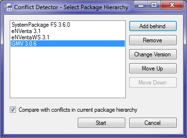
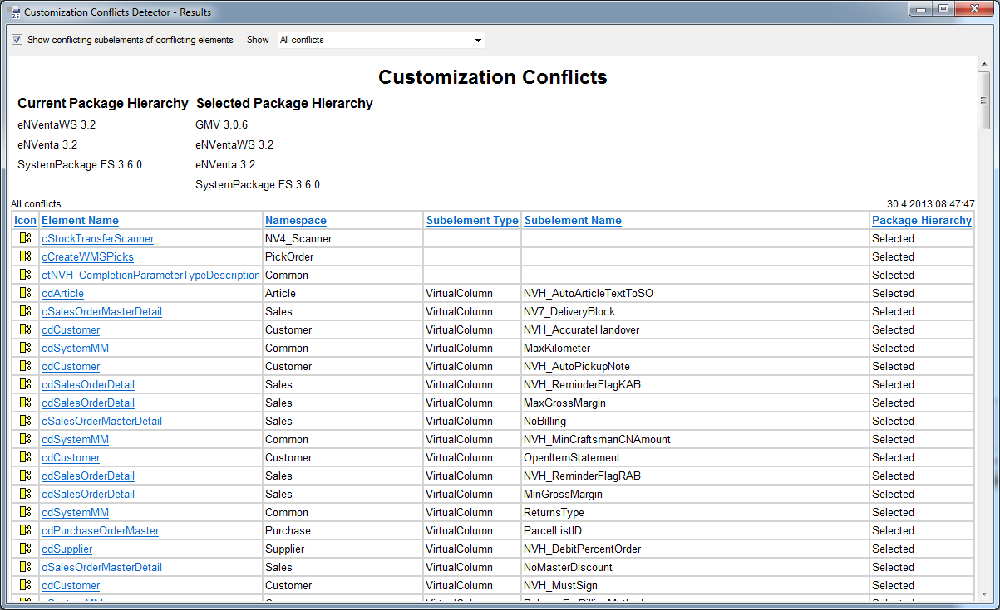
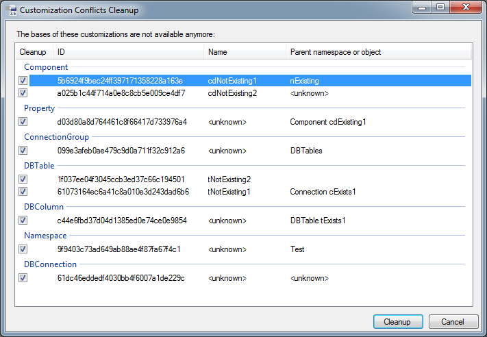

Customization Conflicts
Customization Conflicts - Detector
Dieses Add-In für Framework Studio dient dazu, Elemente in einem Custom Package zu identifizieren, die beim Wechsel auf ein anderes Basispackage (bzw. auf eine andere Basispackage Version) verloren gehen.
Ursachen für einen Verlust können sein:
- Das Element, welches customized wurde, ist in der neuen Version des Basispackages gelöscht worden.
- Das Element, welches customized wurde, wurde im Basispackage in zwei unterschiedlichen Versionen parallel entwickelt. Daher hat das Element dann zwar in beiden Versionen den gleichen Namen, aber eine abweichende ID.
Beispiel für Situation 2:
Es gibt ein Basispackage BasePkg. An diesem gibt es die Packageversionen 1.0, 1.0.1 und 1.1.
Es gibt ein Custom Package CustPkg. An diesem gibt es eine Version 1.0.1, welche auf BasePkg 1.0.1 aufsetzt.
In BasePkg 1.0.1 wird eine Component cdNew angelegt. Diese bekommt intern die ID xyz101.
Parallel dazu wird in BasePkg 1.1 ebenfalls eine Component cdNew angelegt. Diese bekommt intern die ID abc11.
In CustPkg 1.0.1 wurde die Component cdNew (ID=xyz101) customized und beispielsweise ein neues Property hinzugefügt.
Wenn nun aus der Packageversion CustPkg 1.0.1 die Version 1.1 erstellt wird und diese auf BasePkg 1.1 umgehängt wird, so ist die Customization von cdNew mit dem neuen Property nicht mehr zu sehen.
Die Ursache ist, dass die Component, welche customized wurde mit der ID xyz101 in der Basispackage Version BasePkg 1.1 nicht existiert und es zu der dort existierenden Component mit der ID abc11 keine Customization im CustPkg gibt.
Funktionsbeschreibung
Das Add-In wird aus der Framework Studio IDE mit dem Menüpunkt Tools / Checks / Customization Conflicts - Detector geöffnet. Dieser Menüpunkt erscheint lediglich im Maintenance Mode.
Zunächst wird die Situation definiert, welche analysiert werden soll.

Vorbelegt ist die Packageversionshierarchie, an der Framework Studio angemeldet wurde. Diese wird im Folgenden mit „aktuelle Hierarchie" bzw. im Englischen mit „current hierarchy" bezeichnet. Wird eine abweichende Hierarchie definiert, können die Konflikte in der ausgewählten Hierarchy (engl. selected hierarchy) mit denen in der aktuellen Hierarchie nebeneinander gestellt werden. So sind Änderungen deutlich erkennbar.
Für einen solchen Vergleich muss die Checkbox Compare with conflicts in current package hierarchy gesetzt werden. Die Checkbox ist deaktiviert, wenn die ausgewählte Hierarchie der aktuellen Hierarchie entspricht.
In der linken oberen Ecke des Dialogs wird in einer Listbox die ausgewählte Packageversionshierarchie angezeigt. Die Reihenfolge der Einträge entspricht der Position in der Hierarchie.
Rechts daneben befinden sich Buttons zum Ändern der Hierarchie, die sich auf den ausgewählten Listeneintrag beziehen:
- Add Behind: Fügt eine neue Packageversion in die Hierarchie hinter den aktuell ausgewählten Eintrag ein
- Remove: Löscht die aktuell ausgewählte Packageversion aus der Hierarchie
- Change Version: Ändert die Version des aktuell ausgewählten Eintrags
- Move Up: Verschiebt den ausgewählten Eintrag um eine Position nach oben
- Move Down: Verschiebt den ausgewählten Eintrag um eine Position nach unten
Ist die gewünschte Hierarchie definiert, wird der Analysevorgang mit dem Button Start gestartet. Der Analysevorgang kann mehrere Minuten dauern. Mit dem Button Cancel wird das Add-In geschlossen.
Elemente und Unterelemente:
Ein Element ist ein Objekt in Framework Studio, das ein- und ausgecheckt werden kann. Elemente sind beispielsweise Forms, Components, Metadatentypen, Resourcen, Workflows usw.
Ein Unterelement (engl. subelement) ist ein Objekt aus Framework Studio, das nicht einzeln ein- oder ausgecheckt werden kann, sondern Teil eines Elements ist und mit diesem ein- und ausgecheckt wird. Beispiele für Unterelemente sind Formmethoden, Properties und Methoden einer Component, Datenbankspalten (DBColumns), Workflowlinks usw.
Wenn die Analyse abgeschlossen ist, werden die Ergebnisse tabellarisch aufgelistet.

Oberhalb der Tabelle werden die aktuelle Packagehierarchie (Current Package Hierarchy) und die ausgewählte Hierarchie (Selected Package Hierarchy) angezeigt. Ist die ausgewählte Hierarchie mit der aktuellen identisch oder es wurde die Checkbox für den Vergleich nicht gesetzt, so wird nur eine Hierarchie angezeigt.
In der Leiste am oberen Rand des Dialogs können die Ergebnisse durch zwei Optionen eingeschränkt werden:
- Checkbox Show conflicting subelements of conflicting elements: Wenn ein Element bereits einen Konflikt hat, haben automatisch alle Unterelemente ebenfalls Konflikte. Ist die Checkbox gesetzt, werden auch die Konflikte der Unterelemente angezeigt. Ist die Checkbox nicht gesetzt, werden zu Elementen mit einem Konflikt keine Konflikte in Unterelementen angezeigt.
- Combobox Show: Diese Combobox wird nur angezeigt, wenn zwei Hierarchien verglichen werden. Zur Auswahl stehen dann folgende Optionen:
- All conflicts: Alle Konflikte anzeigen
- Only conflicts in selected package hierarchy: Nur Konflikte anzeigen, die ausschließlich in der ausgewählten Hierarchie auftreten
- Only conflicts in current package hierarchy: Nur Konflikte anzeigen, die ausschließlich in der aktuellen Hierarchie auftreten
- Only conflicts in both package hierarchies: Nur Konflikte anzeigen, die in beiden Hierarchien auftreten
Im Folgenden werden die Bedeutungen der einzelnen Tabellenspalten beschrieben. Daten der Tabelle lassen sich durch Anklicken einer Spaltenüberschrift nach der entsprechenden Spalte sortieren.
- Icon: Symbol des Elements. Durch Klicken auf die Spaltenüberschrift kann nach dem Elementtyp sortiert werden.
- Element Name: Name des Elements. Es kann vorkommen, dass der Name des Elements nicht mehr ermittelt werden kann. In diesem Fall wird kursiv die ID des Elements angezeigt. Der Tooltip zeigt immer ID und Version des Elements an. Ist der Elementname als Link dargestellt (blau und unterstrichen), so kann das Element durch Anklicken des Namens geöffnet werden.
- Namespace: Name des Namespaces, in dem das Element zu finden ist. Der Namespace kann nicht vollständig referenziert angezeigt werden. Der Tooltip zeigt die ID des Namespaces.
- Subelement Type: Typ des Unterelements. Ist das betroffene Element kein Unterelement, so bleibt die Spalte leer.
- Subelement Name: Name des Unterelements, soweit es sich um ein Unterelement handelt. Kann der Name nicht ermittelt werden, wird kursiv die ID des Unterelements angezeigt. Der Tooltip zeigt immer ID und Version an. Ist der Name als Link (blau und unterstrichen) dargestellt, kann durch Anklicken des Namens das Unterelement oder das Element geöffnet werden.
- Package Hierarchy: Zeigt an, in welcher Hierarchie der Konflikt auftritt.
Diese Spalte wird nur angezeigt, wenn zwei Hierarchien verglichen werden.
Mögliche Werte sind:
- Current: Konflikt nur in der aktuellen Hierarchie
- Selected: Konflikt nur in der ausgewählten Hierarchie
- Both: Konflikt in beiden Hierarchien
Die Darstellung der Konflikte geschieht in Form einer HTML-Seite. Über das Kontextmenü können beispielsweise die Ergebnisse kopiert oder gedruckt werden.
Kompatibilität
Grundsätzlich ermöglicht das Add-In, Packageversionen, die zu unterschiedlichen FS-Versionen gehören, zu analysieren und zu vergleichen. Es gibt jedoch eine Einschränkung:
Warning
Packageversionen, denen eine FS Version 3.6 oder höher zugeordnet ist, können nicht mit dem Add-In aus FS 3.5.x analysiert werden!
Typische Anwendungsbeispiele
Beispiel 1
Alle Versionen wurden mit der gleichen FS Version entwickelt. Fett gedruckte Versionen existieren bereits.
- Ausgangshierarchie:
Base 1.0.1/Branch 1.0.1/Cust 1.0.1 - Zielkonfiguration:
Base 1.1/Branch 1.1/Cust 1.1
Cust 1.1 soll aus Cust 1.0.1 durch Labeln erzeugt werden. Die Konflikte, die dadurch entstehen, sollen vorher analysiert werden.
Vorgehen:
Anmeldung mit FS an Cust 1.0.1 (basierend auf Branch 1.0.1 und Base 1.0.1). AddIn mit der Hierarchie Base 1.1 / Branch 1.1 / Cust 1.0.1 starten.
- Alle Konflikte, die nur in der ausgewählten Hierarchie erscheinen, sind neu
- Alle Konflikte, die nur in der aktuellen Hierarchie erscheinen, sind zukünftig nicht mehr problematisch
- Alle Konflikte, die in beiden Hierarchien erscheinen, sind unproblematisch, da sie zwar auch zukünftig existieren, aber auch in der aktuellen Hierarchie bereits existieren
Konfliktlösung:
Nach dem Labeln von Cust 1.0.1 können die betroffenen Elemente in Cust 1.1 gelöscht (und wichtige Inhalte gesichert) werden. Dies muss vor dem Umhängen auf Branch 1.1 / Base 1.1 geschehen.
Nach dem Umhängen können die Elemente neu angelegt (und mit den gesicherten Inhalten gefüllt) werden.
Beispiel 2
Alle Versionen 1.0.1 wurden mit FS 3.5 entwickelt, alle Versionen 1.1 mit FS 3.6.
- Ausgangshierarchie:
Base 1.0.1/Branch 1.0.1/Cust 1.0.1 - Zielkonfiguration:
Base 1.1/Branch 1.1/Cust 1.1
Cust 1.1 soll aus Cust 1.0.1 durch Labeln erzeugt werden.
Problem: Mit FS 3.6 kann man sich nicht an Cust 1.0.1 (wie in Beispiel 1) anmelden.
Dies wäre nötig, da sowohl Packageversionen die mit FS 3.5 erstellt wurden als auch welche, die mit FS 3.6 erstellt wurden, analysiert werden müssen.
Variante a)
Ziel: Es soll im Vorhinein analysiert werden.
Vorgehen:
Mit FS 3.6 an Branch 1.1 (Basis ist Base 1.1) anmelden. Add-In mit der Hierarchie Base 1.1 / Branch 1.1 / Cust 1.0.1 starten.
- Alle Konflikte, die nur in der ausgewählten Hierarchie erscheinen, sind neu in
Cust 1.1oder existieren bereits inCust 1.0.1(mitBranch 1.0.1undBase 1.0.1) - Alle Konflikte, die nur in der aktuellen Hierarchie erscheinen, sind zukünftig nicht mehr problematisch
- Alle Konflikte, die in beiden Hierarchien erscheinen, sind unproblematisch, da sie zwar auch zukünftig existieren, aber auch in der aktuellen Hierarchie bereits existieren
Nachteil:
Man sieht nicht direkt, ob Konflikte in der ausgewählten Hierarchie in Cust 1.1 neu sind oder bereits in Cust 1.0.1 bestanden haben.
Um dies zu prüfen, müsste man sich zusätzlich mit FS 3.5 an Cust 1.0.1 / Branch 1.0.1 / Base 1.0.1 anmelden und prüfen, ob der Konflikt dort auch schon bestand.
Konfliktlösung:
Die Konfliktlösung kann grundsätzlich erst erfolgen, wenn Cust 1.1 eröffnet wurde (siehe oben).
Variante b)
Ziel: Genaue Übersicht, welche Probleme neu hinzukommen.
Vorgehen:
Cust 1.0.1 labeln und Cust 1.1 auf FS 3.6 heben. Basispackages wie in Cust 1.0.1 lassen.
Mit FS 3.6 an Cust 1.1 (Basis sind Branch 1.0.1 und Base 1.0.1) anmelden. Add-In mit der Hierarchie Cust 1.1 / Branch 1.1 / Base 1.1 starten.
- Alle Konflikte, die nur in der ausgewählten Hierarchie erscheinen, sind neu
- Alle Konflikte, die nur in der aktuellen Hierarchie erscheinen, sind zukünftig nicht mehr problematisch
- Alle Konflikte, die in beiden Hierarchien erscheinen, sind unproblematisch, da sie zwar auch zukünftig existieren, aber auch in der aktuellen Hierarchie bereits existieren
Konfliktlösung:
Alle neuen Konflikte können erst gelöst werden, wenn die alte Version versiegelt und eine neue Version eröffnet wurde, die aber noch auf den alten Basispackages aufsetzt. In dieser Situation können die zukünftigen Konflikte abgeräumt werden (Löschen der Customization, soweit möglich, und Sicherung der Inhalte soweit nötig). Danach kann die neue Version auf die neuen Basispackages gehoben werden und die fehlenden Elemente wieder neu angelegt werden.
Customization Conflicts – Cleanup
Dieses Add-In dient dazu, Customizations in der aktuellen Packageversion zu suchen, die keine gültige Basis in einem Basepackage mehr besitzen, und abzuräumen.
Warning
Da dies direkt über die Datenbank erfolgt, ist höchste Vorsicht geboten. Die Aktion lässt sich ausschließlich durch das Einspielen eines Datenbank-Backups ungeschehen machen.
Funktionsbeschreibung
Der Menüpunkt Tools / Checks / Customization Conflicts – Cleanup startet das Add-In. Genau wie beim Detector ist dieser Menüpunkt nur im Maintenance Mode sichtbar. Es erscheint ein Fortschrittsdialog, der die Suche nach Customizations ohne Basis durchführt.
Wird kein Konflikt gefunden, erscheint die Meldung There's nothing to cleanup.
Ansonsten folgt ein Dialog, der alle Konflikte auflistet.
Durch das Aktivieren bzw. Deaktivieren der Checkbox-Controls an den Einträgen kann festgelegt werden, welche Einträge bereinigt werden sollen.

Wenn es sich bei den Einträgen um Unterobjekte wie z.B. Properties einer Component handelt, muss sichergestellt sein, dass die entsprechende Component nicht ausgecheckt ist. Der Grund dafür ist, dass die Components beim Cleanup aus- und wieder eingecheckt werden müssen.
Nachdem dieser Dialog durch einen Klick auf Cleanup bestätigt wurde, beginnt das automatische Eliminieren der Konflikte. Es erscheint ein weiterer Fortschrittsdialog, der den Fortschritt der Aufräumaktion anzeigt.
Im Ausgabefenster des FrameworkDesigners wird eine Liste von Log-Einträgen ausgegeben, die auflistet, welche Einträge aufgeräumt wurden:
Customization Conflicts Cleanup
- Component(name=cdNotExisting1, id=5b6924f9bec24ff397171358228a163e, version=1,
packageID=668550402cca42f39d18cc306c5db2b5, nspID=280c4a12df4946ed98b097bb7c889b8c)
- Component(name=cdNotExisting2, id=a025b1c44f714a0e8c8cb5e009ce4df7, version=1,
packageID=668550402cca42f39d18cc306c5db2b5, nspID=9f9403c73ad649ab88ae4f87fa67f4c1)
- Property(name=<unknown>, id=d03d80a8d764461c8f66417d733976a4, version=1) at
Component(name=cdExisting1, id=319aebd0f2e84c3383897fb725cf5196, version=1,
packageID=668550402cca42f39d18cc306c5db2b5, nspID=280c4a12df4946ed98b097bb7c889b8c)
- ConnectionGroup(name=<unknown>, id=099e3afeb0ae479c9d0a711f32c912a6, version=1,
packageID=668550402cca42f39d18cc306c5db2b5, nspID=GeneralDBTables)
- DBTable(name=tNotExisting2, id=1f037ee04f3045ccb3ed37c66c194501, version=1,
packageID=668550402cca42f39d18cc306c5db2b5, nspID=61dc46eddedf4030bb4f6007a1de229c)
- DBTable(name=tNotExisting1, id=61073164ec6a41c8a010e3d243dad6b6, version=1,
packageID=668550402cca42f39d18cc306c5db2b5, nspID=d042d12aef2742f58419697025e60fc7)
- DBColumn(name=<unknown>, id=c44e6fbd37d04d1385ed0e74ce0e9854, version=1) at
DBTable(name=tExists1, id=81c3687a5e0c454ca8a8a3e80b5fe40f, version=1,
packageID=668550402cca42f39d18cc306c5db2b5, nspID=d042d12aef2742f58419697025e60fc7)
- Namespace(name=<unknown>, id=9f9403c73ad649ab88ae4f87fa67f4c1, version=1,
packageID=668550402cca42f39d18cc306c5db2b5, nspID=a6cfca4ce915461f984303ced681539a)
- DBConnection(name=<unknown>, id=61dc46eddedf4030bb4f6007a1de229c, version=1,
packageID=668550402cca42f39d18cc306c5db2b5, nspID=)
Cleanup finished successfully.